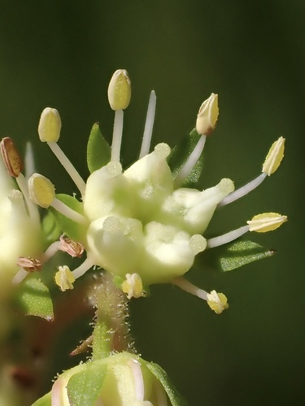

Penthoraceae
Ditch Stonecrop Family
Penthoraceae is a small, monogeneric family of flowering plants in the order Saxifragales, containing only the genus Penthorum with two species of perennial herbs. These plants, commonly known as ditch stonecrops, typically grow in wet habitats like ditches, marshes, and stream banks. The family has a distinctive disjunct distribution between eastern North America and eastern Asia. They are characterized by their alternate serrated leaves and unique 5-parted fruits.
Overview
The Penthoraceae family consists solely of the genus Penthorum, represented by just two species: P. sedoides in eastern North America and P. chinense in eastern Asia. This classic example of an East Asian-Eastern North American disjunct distribution pattern points to a shared history, likely related to past land connections or climate changes across the Northern Hemisphere.
These perennial herbs thrive in moist to wet environments. They have erect stems with alternate, simple, toothed leaves. The small flowers are borne in characteristic branched, often one-sided cymose inflorescences. A key feature is the usual absence of petals, with the 5 sepals being the most prominent perianth parts. The fruit is particularly distinctive: a star-shaped structure composed of 5 basally fused follicle-like segments that open at their tips.
Historically, Penthorum was often placed within Saxifragaceae or Crassulaceae due to superficial similarities (herbaceous habit, 5-merous flowers, follicular fruit). However, molecular data firmly places it within the core Saxifragales order, but as a distinct lineage, often closely related to Haloragaceae (water milfoil family). This led to its recognition as the separate family Penthoraceae.
Quick Facts
- Scientific Name: Penthoraceae Rydb. ex Britton
- Common Name: Ditch Stonecrop Family
- Number of Genera: 1 (Penthorum)
- Number of Species: 2 (P. sedoides, P. chinense)
- Distribution: Disjunct: Eastern North America and Eastern Asia.
- Evolutionary Group: Eudicots - Core Eudicots - Saxifragales
Key Characteristics
Growth Form and Habit
Perennial herbs with erect stems, typically growing from rhizomes. Found in wet habitats.
Leaves
Leaves are arranged alternately along the stem. They are simple, lanceolate to elliptic or oblong in shape, with sharply serrate (toothed) margins. Stipules are absent.
Inflorescence
Flowers are arranged in terminal, branched, often secund (one-sided) cymes or scorpioid cymes.
Flowers
Flowers are small, bisexual, and actinomorphic (radially symmetrical), typically 5-merous (sometimes 6- or 7-merous). A shallow hypanthium is present.
- Sepals: Usually 5 (up to 7), triangular or lanceolate, fused at the base, greenish, and persistent in fruit.
- Petals: Usually absent (apetalous). If present, they are 5 (up to 7), minute, linear or thread-like, greenish-white, and quickly falling (caducous).
- Androecium: Stamens are typically 10 (twice the number of sepals), inserted on the rim of the hypanthium. Filaments are distinct and slender.
- Gynoecium: The ovary is superior to partly inferior (fused to the hypanthium at the base). It is composed of 5 (up to 7) carpels that are fused only at their base, diverging above (appearing almost apocarpous). Each carpel portion functions somewhat like a separate locule containing numerous ovules on axile or marginal placentae. Styles are 5 (up to 7), short, persistent, and recurved; stigmas are capitate (head-like).
Fruits and Seeds
The fruit is highly distinctive: a star-shaped, follicular capsule (or an aggregate of basally fused follicles). It consists of the 5 (or more) persistent, inflated carpel segments fused at the base. Each segment (follicle) opens near its apex via irregular rupture or circumscissile dehiscence (forming a small cap or beak that detaches), releasing numerous tiny, brownish seeds.
Chemical Characteristics
Plants contain tannins and flavonoids. Glucosinolates (mustard oils) are absent.
Field Identification
Identifying Penthoraceae relies on its herbaceous habit in wet areas, leaf and inflorescence type, and especially its unique fruit structure:
Primary Identification Features
- Habit: Perennial herb found in wet habitats (ditches, marshes, stream banks).
- Geographic Location: Eastern North America OR Eastern Asia.
- Leaves: Alternate, simple, with serrated margins. No stipules.
- Inflorescence: Terminal, branched, often one-sided cymes.
- Flowers: Small, 5-merous, with persistent sepals, usually lacking petals, and typically 10 stamens.
- Fruit: Distinctive star-shaped structure of 5 basally fused follicles (capsule segments) that open at the tips.
Secondary Identification Features
- Stems: Erect, often reddish.
- Flowers: Greenish-yellow or reddish appearance due to sepals and stamens.
- Seeds: Numerous and tiny.
Seasonal Identification Tips
- Summer/Fall: Flowering and fruiting season. The unique star-shaped fruits are most diagnostic and often persist after leaves senesce.
- Spring: Emergence from rhizomes, vegetative growth.
- Winter: Dormant rhizomes, possibly persistent dead stems with characteristic fruits.
Common Confusion Points
- Crassulaceae (Stonecrop Family): Some Sedum species grow in wet places and have 5-merous flowers. However, Crassulaceae are typically succulent, usually have petals, often have 5 or 10 stamens, and possess separate follicles or capsules derived from clearly distinct carpels (apocarpous or nearly so).
- Saxifragaceae (Saxifrage Family): Many are herbs, often with basal leaves and cymose inflorescences. Flowers are typically 5-merous with petals present, often 5 or 10 stamens, and usually 2 (sometimes more) carpels that are fused to varying degrees, often forming a capsule or separate follicles.
- Polygonaceae (Smartweed Family): Some species grow in wet habitats with alternate simple leaves. However, Polygonaceae typically have sheathing stipules (ocrea), small flowers with petaloid tepals (not distinct sepals/petals), fewer stamens (3-9), a single-loculed ovary, and fruit an achene or nutlet.
Field Guide Quick Reference (E N America / E Asia)
Look For:
- Herb in wet habitat
- Leaves: Alternate, simple, serrated
- Inflorescence: Branched, one-sided cyme
- Flowers: Small, 5-merous, petals usually absent
- Stamens: 10
- Fruit: Star-shaped aggregate of 5 basally fused follicles
Key Distinctions:
- Unique 5-parted follicular fruit
- Absence of petals (usually)
- 10 stamens
- Alternate, serrated leaves (no stipules)
- Specific disjunct distribution
- Monogeneric: Penthorum
Notable Examples (The Two Species)
The family contains only the genus Penthorum with two species:

Penthorum sedoides
Ditch Stonecrop
The North American species, found in wet ditches, marshes, swamps, and along streams throughout much of eastern and central North America. It is a perennial herb growing 30-80 cm tall with alternate, lanceolate, serrated leaves and terminal cymes of small, greenish-yellow, apetalous flowers, developing the characteristic 5-horned fruit.

Penthorum chinense
(Chinese Ditch Stonecrop)
The Eastern Asian species, found in similar wet habitats in China, Korea, Japan, Russia (Far East), and parts of Southeast Asia. It is very similar morphologically to P. sedoides, differing perhaps in subtle details of size, hairiness, or seed ornamentation. Often used in traditional Chinese medicine.
Phylogeny and Classification
Penthoraceae belongs to the order Saxifragales, a diverse group within the core eudicots that includes herbs, shrubs, trees, and succulents.
Molecular phylogenetic studies place Penthoraceae within the "core Saxifragales" clade, separate from the basal lineages like Peridiscaceae, Paeoniaceae, Altingiaceae, Hamamelidaceae, and Cercidiphyllaceae. Within this core group, Penthoraceae is consistently shown to be closely related to Haloragaceae (water milfoil family) and the small Australian family Aphanopetalaceae. These three families form a well-supported clade. This relationship is interesting given the morphological differences, particularly between the herbaceous Penthoraceae and the often aquatic Haloragaceae.
Position in Plant Phylogeny (APG IV)
- Kingdom: Plantae
- Clade: Angiosperms (Flowering plants)
- Clade: Eudicots
- Clade: Core Eudicots
- Order: Saxifragales
- Family: Penthoraceae
Evolutionary Significance
Penthoraceae, though small, is significant for:
- Biogeography: The classic East Asian - Eastern North American disjunct distribution provides important evidence for historical floristic connections across the Northern Hemisphere.
- Phylogenetic Relationships: Its position clarifies relationships within the core Saxifragales, particularly its close link to the morphologically dissimilar Haloragaceae and Aphanopetalaceae, highlighting evolutionary transitions between terrestrial/wetland herbs and aquatic habits or climbing habits.
- Morphological Uniqueness: The combination of features, especially the unusual 5-parted follicular fruit formed from basally fused carpels and the common absence of petals, represents a unique morphological combination within Saxifragales.
- Basal Eudicot Diversification: As part of Saxifragales, it contributes to understanding the diversity and relationships among core eudicot lineages.